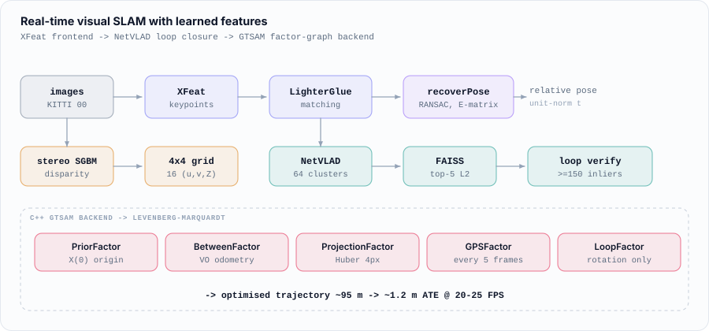
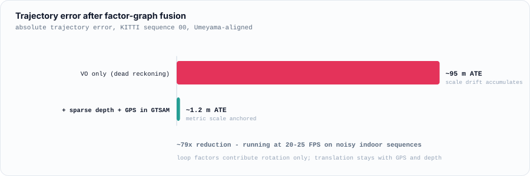

Real-Time Visual SLAM with Learned Features
Monocular VO on an XFeat/LighterGlue frontend, NetVLAD loop closure, and a C++ GTSAM factor-graph backend: ~95 m to ~1.2 m ATE on KITTI.
Built during my research assistantship at USC on the NEI smart-glasses platform. The goal was a monocular SLAM stack that survives what a wearable actually sees: motion blur, sudden rotation, and no reliable depth sensor.

Two decisions drive the design. Classical hand-crafted detectors (ORB, SIFT) degrade badly under blur, so the frontend runs learned features. And the backend is a factor graph rather than a filter, so loop closures and sparse depth can correct drift retroactively; a filter would have already marginalized that information away.
What each stage does
- VO frontend: XFeat keypoints with LighterGlue matching per frame pair, then
findEssentialMat(RANSAC) andrecoverPosefor relative rotation and translation. Translation is unit-norm; metric scale is recovered later in the backend. - Simulated ToF depth: rather than relying on a 360° LiDAR the wearable does
not have, depth comes from the stereo pair via OpenCV SGBM disparity
(
Z = fx · baseline / d), sampled on a 4×4 grid over the central image region to emit 16(u, v, Z)tuples per frame. - Place recognition: every 10th frame becomes a keyframe with a 64-cluster NetVLAD descriptor (VGG16 conv5_3 → NetVLAD → L2-normalized, dim 32768), indexed in FAISS. Top-5 L2 search, rejecting anything within 100 frames of the current pose.
- Loop verification: candidates are re-matched with XFeat and pose-checked, accepted only at ≥150 RANSAC inliers and ≥0.25 inlier ratio. Only the rotation is kept: the loop factor uses tight rotation noise (σ = 0.1 rad) and effectively-free translation (σ = 100 m), so metric scale stays anchored to GPS and depth rather than leaking in through loop closures.
- C++ GTSAM backend: a
NonlinearFactorGraphcombining a prior at the origin,BetweenFactorPose3odometry with noise scaled by inverse inlier ratio,GenericProjectionFactorfor each depth point under a Huber-robust 4px cost, periodicGPSFactorconstraints, and loop-closure between-factors, solved with Levenberg–Marquardt.
Results

Evaluated as ATE against KITTI sequence 00 ground truth with Umeyama scale alignment, the standard protocol for monocular trajectories. Debugging sensor noise, calibration drift, and VO failures also reduced tracking dropouts by ~30%.